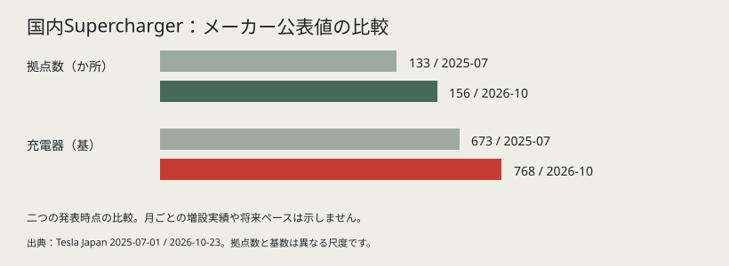

HW3 + HW4 · OWNER’S GUIDE
日本のSuperchargerはどのペースで増えた？ 公表値2点で確かめる。
2025年7月の133か所・673基から、2026年10月の156か所・768基へ。拠点と充電器を分けて比較する。

Nashucks / Wikimedia Commons · CC0 · 縮小版。表示枠に合わせたトリミングあり。
公表日時点の数値を比較
Tesla Japanの2025年7月1日の公表値は国内133か所・673基。2026年10月23日の公表値は156か所・768基です。差は23か所・95基。これらは発表時点のメーカー公表値で、本誌が現地確認した稼働数ではありません。
毎月一定に増えたとは限らない
二つの公表日間は479日、約15.7か月です。単純な期間平均は月約1.46か所・6.04基。ただしこれは増設の均等なペースや、特定月の実績を意味しません。発表日と設備集計日のずれ、増設・閉鎖・数え方の変化も確認が必要です。
| 公表日 | 国内拠点 | 充電器基数 |
|---|---|---|
| 2025-07-01 | 133か所 | 673基 |
| 2026-10-23 | 156か所 | 768基 |
| 公表値の差 | +23か所（約17.3%） | +95基（約14.1%） |

将来も同じペースとは予測しない
この平均をそのまま翌年の拠点数へ延長する根拠は不足しています。今後は日次の公式一覧差分と、開業を明記した発表を合わせます。取得制限がある日は未確認とし、新設がないとは表示しません。計画・新規掲載・開業を別項目で扱います。

Vauxford / Wikimedia Commons · CC BY-SA 4.0 · 縮小版。表示枠に合わせたトリミングあり。